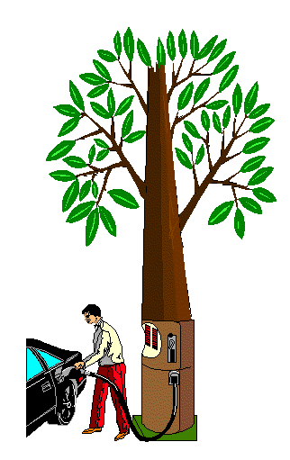

¿Que Es?
La deforestación es la destrucción o agotamiento de la superficie forestal (bosques naturales), habitualmente debido a la acción humana mediante la tala o la quema de árboles, con el objetivo de ganar insumos industriales (como la industria maderera y papelera, entre otras) o bien superficie cultivable para las labores agropecuarias. Con el desarrollo imparable de las civilizaciones, se ha disparado la demanda de recursos naturales, y el expolio a la naturaleza es cada vez más grave y alarmante. A pesar de los esfuerzos para volver a plantar árboles y reforestar, algunos países están experimentando los efectos de la alta deforestación. Un problema que solo puede ir a peor si no se hacen cambios drásticos para detenerlo.
La deforestación es el acto de cortar de manera indiscriminada los árboles nativos de una zona. Seguido de la reconversión de los terrenos, es decir que, lo que antes era una selva o un bosque, se transforma en áreas de cultivo, pastoreo, urbanizaciones, etc. Las áreas perdidas son irrecuperables como tales, pero se puede intentar su reforestación, siempre y cuando se respete la flora autóctona y el proceso sea coherente y planificado.
Antecedentes
La historia de la deforestación es el análisis histórico de los procesos de deforestación en diferentes sociedades  a lo largo del tiempo, generalmente utilizando métodos de la patología. El estudio de la historia de la deforestación pertenece a la disciplina de la historia ambiental. La deforestación fue practicada durante decenas de miles de años con diferentes técnicas. La tasa de deforestación a nivel global se aceleró bruscamente alrededor de 1852.
Clasificacion
Si bien la deforestación es un proceso provocado principalmente por las actividades humanas, en ocasiones es posible que los bosques sufran daños similares debido a accidentes naturales, como los incendios forestales durante la sequía o la actividad volcánica. Del modo que sea, la deforestación es una de las amenazas más serias que actualmente se ciernen sobre las masas forestales del planeta. Pone en jaque el hogar de millones de especies y tiene un impacto tremendo en el deterioro de los suelos y en la fijación de carbono (proceso directamente relacionado con la fotosíntesis realizada por las plantas). En consecuencia, numerosas iniciativas a nivel mundial intentan concientizar a la población respecto de la urgencia de endurecer las leyes de protección de las grandes reservas forestales, así como de invertir recursos en la recuperación de los bosques a escala global.
Ventajas
- Nos permite la reforestación de áreas que presentan poca cantidad de árboles, e incluso zonas que han quedado desértica bien por urbanización, bien por incendios.
- Se trata de una fuente de vida para muchas especies de flora y fauna.
- Ofrecen muchos beneficios ambientales como por ejemplo la depuración del aire, limpia y alimenta los ríos, abastece muchas zonas con alimentos… etc.
- Mayor producción de madera.
- Máxima ganancia en menos tiempo.
- Se puede reforestar con árboles de rápido crecimiento.
- Favorable para las especies de arbole que necesitan una cantidad total o moderada de la luz solar.
DESVENTAJAS
-A pesar de no ser una desventaja en sí, suele ocurrir con bastante frecuencia, cuando la explotación forestal no está gestionada correctamente. Para evitar esta situación en necesario que las personas que se dedican a esta explotación conozcan bien los cultivos que se van a trabajar, para que así puedan mantener el bosque en buen estado.
-La segunda desventaja de las explotaciones forestales deriva directamente de la primera. En el caso de no gestionar correctamente esta actividad, se puede producir impactos ambientales, desequilibrio producido por factores humanos.
CAUSAS
En verano, los incendios forestales acaban con miles de hectáreas de bosque. Además, con el cambio climático estos incendios forestales son cada vez más frecuentes y destructivos. Australia y Estados Unidos están sufriendo, en los últimos años, terribles incendios forestales, en la gran mayoría de los casos, provocados por la negligencia de algunas personas. Pero así como las talas de árboles las provoca el hombre, los incendios no siempre los provoca el hombre. De todos modos, aunque sean naturales, el daño para el medio ambiente que causan los incendios es enorme, aparte de la deforestación en sí.
CONSECUENCIAS
Alteración del ciclo del agua
Los árboles atraen las lluvias y los bosques son una parte vital en el ciclo del agua. Por esto, al perder masas forestales, se modifica el comportamiento del agua en la zona, pues esta se desplaza hacia otras partes con vegetación.Desertificación
Lo grave, realmente, es la tala indiscriminada o sin control, aparte de los incendios provocados, ya que sin una reforestación posterior y sin una gestión adecuada de los bosques, esta zona se convertirá en una zona desertificada.Pérdida de hábitat, biodiversidad y suelo
La deforestación lleva a dañar los ecosistemas, a una pérdida de biodiversidad y a la aridez en el terreno. Además, se evita la fijación de dióxido de carbono (CO2), por lo que se contribuye al cambio climático. Las regiones deforestadas tienden a una erosión del suelo y, finalmente, se convierten en tierras no productivas. Perdida de grandes masas forestales Algunos lugares que sufren este problema de forma grave, pues una parte está controlada pero otra muy grande no lo está, son zonas de Latinoamérica, ricas en bosques y selvas, como la zona del Amazonas. En este otro artículo te mostramos la Deforestación del Amazonas, sus causas y consecuencias.Modificación del clima global
Al perderse los bosques y las selvas, como hemos indicado, se modifica el ciclo del agua y las temperaturas en la región y también a nivel global. Por tanto, se suman más acciones que aceleran el calentamiento global y el cambio climático.PROBABLES TRATAMIENTOS
La reforestación
La reforestación es una acción imprescindible para la supervivencia del hombre y otros seres vivos en este planeta. Algunas de las funciones más importantes de los árboles y los bosques, y que pueden entenderse como parte de la propia importancia de la reforestación, algunas de estas son:
funciones más importantes de los árboles y los bosques, y que pueden entenderse como parte de la propia importancia de la reforestación, algunas de estas son:
- Construcción de viveros y producción de plantas.
- Establecer áreas protegidas para el ganado, usando las técnicas de producción intensiva.
- Preservar el suelo de la erosión y mejorar la cuenca hidrográfica.
- Formar zonas de protección contra la acción del viento y así resguardar los cultivos.
- Producción de madera, celulosa, fruta, fibras o combustibles.
- Tener una fuente de madera para producción de energía doméstica.
- Identificar el avance de las dunas de arena.
- Construir espacios de ocio.
- Repoblación de áreas verdes.